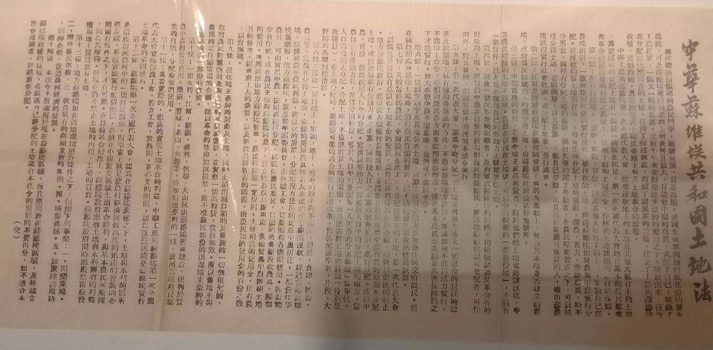
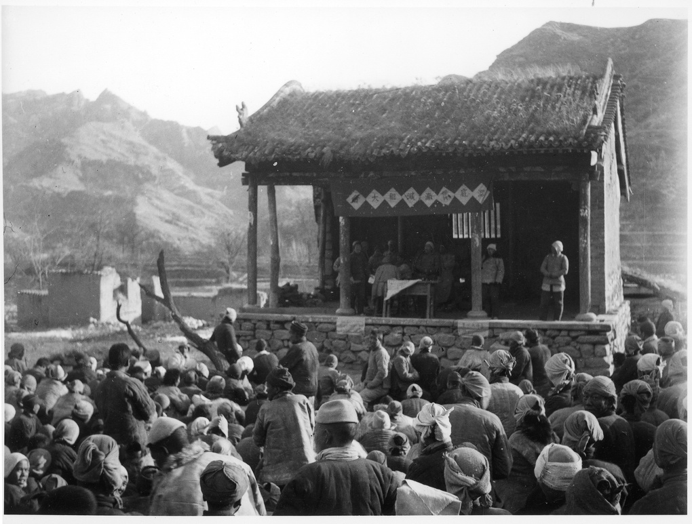
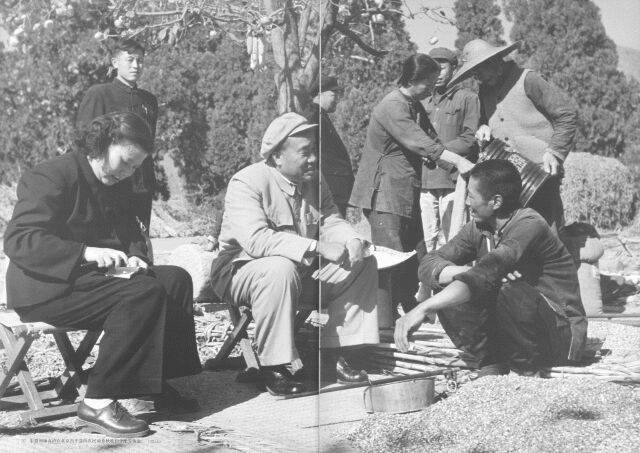

思政专题宣讲
毛泽东思想活的灵魂
群众路线
一切为了群众，一切依靠群众，从群众中来，到群众中去
毛泽东思想活的灵魂
一切为了群众，一切依靠群众，从群众中来，到群众中去

1930 — 1934 · 中央苏区实践
土地革命时期，群众路线体现在一条具体工作链上：走进农村调查，弄清群众的土地诉求，再把调查转化为分田政策。
这一时期的鲜明方法：调查群众的实际处境，以群众利益检验政策。

1939 — 1945 · 抗日根据地的群众工作
根据地的群众工作不止是号召参战，也要回应农民的现实处境。减租减息把改善民生与坚持抗战联系起来。
群众路线在战时的具体样貌：解释政策、组织参与、改善群众生活，并共同承担抗战任务。
1948 — 1949 · 淮海战役支前
淮海战役的前线行动，连接着后方粮运、伤员转运、道路保障和民站接力。群众不是战场背景，而是战役保障体系的重要组成部分。
543万支前民工
群众路线在解放战争中的鲜明实践：把依靠群众落实为组织、保障群众参与的具体制度和行动。

1949年以后 · 从革命党到执政党
进入建设时期，群众路线的重点转向如何保持同群众的联系：到基层了解情况，遇事同群众商量，再用实践检验工作。
历史转折点：革命时期“依靠群众”的经验，延续为执政后的调查研究与群众工作。
从历史经验走向日常行动
今天，坚持群众路线，可以从倾听真实诉求、做好调查研究、解决身边问题开始。
敬请批评指正
汇报人：刘浩轩、方益凡